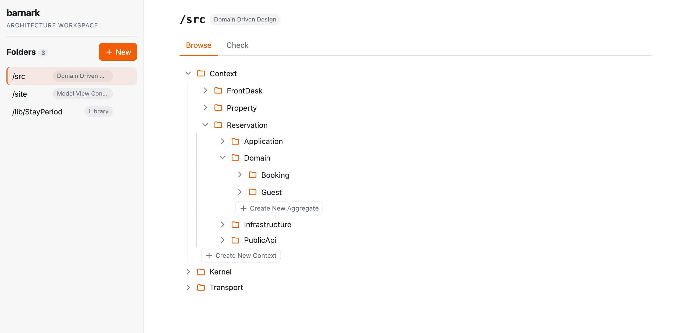
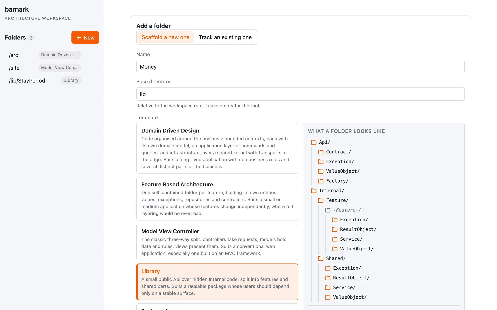
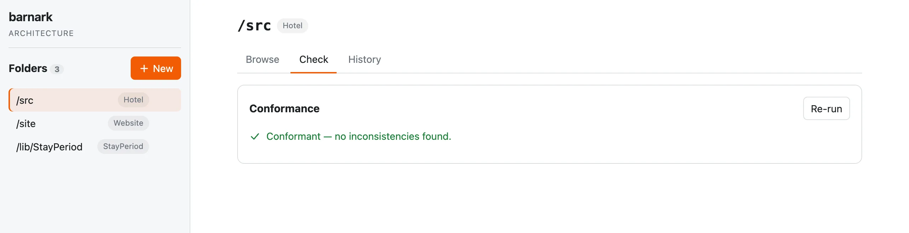

A place for every folder, and a reason for it.
Without a shared architectural vocabulary, classes of every sort end up in any folder. Barnark starts a new project in the architecture you choose, gives every folder a meaning that says what belongs in it, and creates each new part in its right place. Would you know if a new developer had just saved an Application file into the Domain? With every folder’s meaning written down, anyone reading it can spot a file in the wrong place. In a barn it is the Architecture tab, and it works on its own in any project too.

Any architecture. Several in one project.
Barnark has no style of its own. Pick from a catalogue of well-known shapes, and give each part of your project the one that suits it. An application’s core can be Domain Driven Design, its website Model View Controller and a shared library a Library, all in one project. Every template says what it suits, and Barnark shows its shape before you pick it.
Domain Driven Design
Bounded contexts around a shared kernel.
Feature Based
Each feature in one self-contained folder.
Model View Controller
The classic three-way split.
Library
A small public surface over hidden internals.
Package App
A whole application behind a public Api.
Your own templates
Copy any template, your project’s one included, into a template of your own, named by you. Changing one never changes the other.
Pick an architecture. Get the folder.
Click Clone into the project, choose the architecture your project should follow, name your copy of it, and the folder is created with its whole structure. Each choice has a description recommending what that architecture is best suited for. Its folder structure is shown, so you can see how the architecture looks before anything is made.
No copying and pasting necessary. Just click and go.

Every folder says what it is for.
Each folder in a template has a meaning in plain words: what belongs in it, and which way its dependencies point. A team that has never talked about dependency direction learns that there is such a thing, just by reading its own architecture.
Dependency direction is taught, not enforced. Following it stays a human matter, and a team that wants enforcement can add a tool such as deptrac.
- Domain/
- The core business logic and rules, expressed as Aggregates, kept independent of delivery mechanism and infrastructure. It depends only on its own Context’s Domain and PublicApi and on the Domain Kernel, never on another Context.
- PublicApi/
- The only part of a Context another Context may depend on: what it publishes about itself, with its internals kept behind it.
Word for word from the bundled template.
New parts land in the right place.
Your project’s template knows what belongs where. Wherever something may be added, Barnark offers a button for it. Name it, and the whole structure it needs is created for you, so the right way is also the easy way.
Barnark makes folders, not code. What goes in a folder is yours to write, and its meaning says what that is.
Create New Context → Billing
Context/
Billing/ ← new
Application/
Domain/
Infrastructure/
PublicApi/Has anything strayed? Ask.
Nobody has to declare a project “well architected”. Press a button, or run one command, and Barnark checks your project’s folder against its architecture. Either it comes back clean, or it names each folder that doesn’t belong, and where.
It’s the same idea as a proven story in Barnspec, applied to structure: the evidence decides, not opinion.

src/, checked against Hotel, its own copy of Domain Driven Design.Made for new projects.
Barnark keeps a new project well shaped from its first commit. It isn’t for judging a codebase that never followed an architecture: a check over one would list a great many problems, and that isn’t what it’s for. It looks after folders, not files, and it teaches dependency direction rather than enforcing it.
Your own copy, tied to nothing.
When you make a folder, Barnark copies the template into a template of your own, under the name you give it. Nothing ties the copy back: a later change to the catalogue never reaches it, and nothing in your project names the template it came from.
Your project’s template is kept as revisions, and none is ever changed in place. Adding a context or a feature adds it to the template as a new revision, and so does deleting one. Barnark writes each revision's reason. The History tab lists them, and shows each as a read-only tree.
- Hotel · Created with its folder
- Kernel/ · Transport/ · Context/, which holds a member type: Context
- Hotel · Added Context/Billing.
- A new revision. Billing/ arrives with its Domain/, Application/, Infrastructure/ and PublicApi/.
History is read-only.
How it works underneath.
Everything above, in more detail, for when you want it.
The template catalogueThe five bundled shapes, folder by folder
| Template | Top-level shape | Suits |
|---|---|---|
| Domain Driven Design | Context/ (one per bounded context), Kernel/, Transport/ | A long-lived application with rich business rules and several distinct parts of the business |
| Feature Based Architecture | One folder per feature, each with Controller/ Entity/ Exception/ Repository/ Value/ | A small or medium application whose features change independently |
| Model View Controller | Controller, model and view folders, named by you | A conventional web application, especially one built on an MVC framework |
| Library | Api/ (contracts, exceptions, factories, values) over Internal/ | A reusable package whose users should depend only on a stable surface |
| Package App | An application behind an Api/, with contexts, features and a kernel inside | An application that other code installs and drives as a dependency |
Templates are Barncept concepts, each with a description of what it is and what it suits, and a meaning for every folder. Barnark reads one only to copy it, into your project’s template or another of your own; from then on the copy is yours.
Checking a projectSlots and exclusions
A template describes a shape, not your code: its parts are the folders it names itself, and “Context” is a slot your own folders fill. Barnark works out which slot each folder fills from the project’s template and records it, so your contexts are checked where they actually are. Anything it can’t settle is listed. Files are never checked: a template says only what folders there are.
Paths with no architectural meaning, like test fixtures, can be excluded.
What gets createdFolders, with their whole structure
A folder you name arrives with its whole fixed structure, and a folder created empty keeps a .gitkeep so that git keeps it. Apart from that, Barnark never creates a file in your folders. Nothing already on disk is overwritten. Adding or removing a folder you named is a new revision of the template. Each template of your own is kept in .barnark/templates/ (in a barn, .barn/barnark/templates/).
The command lineFor scripts, agents and terminal lovers
$ barnark template:clone "Domain Driven Design" Shop src # your project's template, Shop, and src/
$ barnark template:offers src/Context # what may be created here?
$ barnark template:new Context Billing src/Context
$ barnark template:check # check src/ against Shop
$ barnark template:copy Shop Market # a template of your ownThe folder your project’s template is bound to is recorded in .barnark/tracked-folders.json (in a barn, .barn/barnark/tracked-folders.json), committed with your code and the templates, so a check needs no arguments.
Start your project in shape.
Barnark needs PHP 8.5 and Composer. Install it into a new project, run one command from anywhere in it, and add your first folder.
$ barnark guiInstallationInstall from Packagist
Require Barnark, its command line and its browser app. Composer pulls in Barncept and Barnscaff.
$ composer require --dev rmb32/barnark rmb32/barnark-cli rmb32/barnark-gui